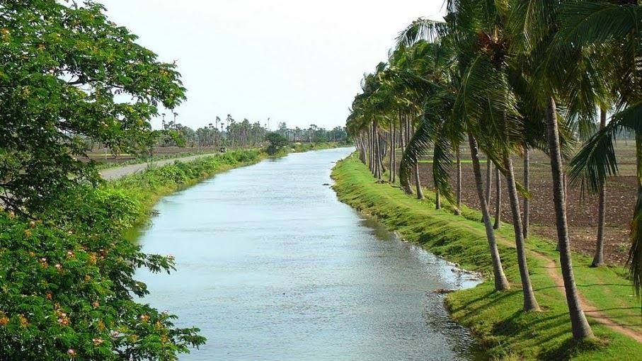

WEST GODAVARI
.png)
History
During the Madras Presidency in 1823, the District of Rajahmundry was created. It was reorganised in 1859 and bifurcated into the Godavari and Krishna districts. During British rule, Rajahmundry was the headquarters of Godavari district, which was further divided into East Godavari and West Godavari in 1925. When the Godavari district was split, Kakinada became the headquarters of East Godavari and Eluru became the headquarters of West Godavari. After the 4 April 2022 bifurcation for a separate Eluru district, Bhimavaram became the new headquarters of West Godavari.
Historically, the region has been a fertile agricultural belt and a strategic location due to its riverine network. It was ruled by several dynasties such as the Satavahanas, Eastern Chalukyas, and Kakatiyas, each of whom contributed to its cultural fabric. Under the Vijayanagara Empire, West Godavari saw flourishing trade in rice, textiles, and handicrafts. Later, the Qutb Shahi and Mughal influences brought Persian-inspired architecture and administrative systems. The British, upon gaining control, developed irrigation systems like the Sir Arthur Cotton Barrage which transformed agriculture in the delta. This rich history has left behind numerous temples, forts, and historic settlements, making West Godavari not only agriculturally significant but also a treasure trove for history enthusiasts.
The modern identity of West Godavari blends its colonial legacy with traditional Telugu heritage, preserving centuries-old crafts like carpet weaving while also embracing new industries. Today, the district stands as a testament to resilience and adaptation, balancing its past with forward-looking development.
Geography
The district spans an area of 7,742 square kilometres. It is bounded by East Godavari to the north, Eluru to the northwest, Konaseema to the southeast, Krishna district to the southwest, and the Bay of Bengal to the south. The fertile deltaic plains of the Godavari River dominate its landscape, enriched by alluvial soil ideal for paddy cultivation. The Godavari River flows on the east, while the Tammileru River and Kolleru Lake separate it from the Krishna district on the west.
West Godavari is a predominantly flat region with a gentle slope toward the east, allowing rivers to drain smoothly into the Bay of Bengal. The three major rivers—the Godavari, Yerrakaluva, and Tammileru—are the lifelines of agriculture here. The district also benefits from irrigation projects like the Sir Arthur Cotton Barrage, Eluru Canal, and various anicuts and reservoirs. Kolleru Lake, one of Asia’s largest freshwater lakes, lies partly within the district, serving as a crucial ecological zone and bird sanctuary. Its wetlands attract migratory birds from as far as Siberia.
The topography and waterways make West Godavari one of the greenest and most agriculturally productive districts in Andhra Pradesh. Its fields are a patchwork of paddy, sugarcane, banana, and coconut plantations. The proximity to the coast also makes aquaculture—particularly shrimp farming—an important economic activity. Despite its low elevation, the district’s strategic location and natural fertility have supported dense human settlement for centuries.
Climate
West Godavari experiences a tropical climate, characterized by hot summers, moderate winters, and high humidity throughout most of the year. Summers, from March to June, often see temperatures rising above 40°C, while the monsoon season from June to September brings substantial rainfall, replenishing rivers and irrigation canals. The northeast monsoon, though weaker, adds to the district’s overall water availability between October and December.
Winters, from November to February, are mild and pleasant, with average temperatures ranging between 20°C and 28°C, making it the best season for tourism. The district's flat terrain and abundant water bodies also create microclimates, keeping agricultural fields lush year-round. However, the same geography makes it vulnerable to cyclonic storms from the Bay of Bengal, especially during October and November.
The ample rainfall, averaging between 1,000 and 1,100 mm annually, supports paddy cultivation as the primary crop. This climatic pattern, combined with extensive irrigation infrastructure, enables farmers to take multiple crops in a year, making West Godavari a leading contributor to the state’s rice production. Seasonal festivals like Sankranti and Karthika Masam are celebrated in sync with agricultural cycles, reflecting the deep connection between climate and culture.


Tourism
West Godavari is not just an agricultural hub but also a region steeped in natural beauty, religious significance, and cultural heritage. One of the most visited places is the Dwaraka Tirumala Temple, also known as Chinna Tirupati, which attracts devotees from across the state. This temple, dedicated to Lord Venkateswara, is set on a picturesque hill surrounded by greenery, making it both a spiritual and scenic experience.
The serene Kolleru Lake Wildlife Sanctuary is another gem, drawing birdwatchers and nature lovers, especially during the winter months when migratory birds like pelicans, painted storks, and flamingos arrive in large numbers. For those who enjoy coastal beauty, Perupalem Beach offers a peaceful retreat with golden sands and gentle waves, away from the bustling tourist spots.
Palakollu, home to the famous Ksheerarama Temple—one of the Pancharama Kshetras—is a must-visit for pilgrims. This temple is not only architecturally striking but also historically important. Another major attraction is the Kovvur Bridge over the Godavari River, offering breathtaking sunset views. Narsapur, a town known for its lace industry, also boasts scenic river views and cultural vibrancy.
Festivals like Sankranti and Maha Shivaratri are celebrated with great enthusiasm, turning temple towns into hubs of activity. Traditional boat races, folk dances, and fairs add to the festive charm. For history buffs, several colonial-era buildings and ancient temples dot the landscape, narrating the district's journey through time. Whether you are drawn to nature, history, or spirituality, West Godavari offers a unique blend of experiences that leave a lasting impression.
Culture and Festivals
The culture of West Godavari is deeply rooted in its agrarian lifestyle, with traditions passed down through generations. Festivals here are not merely religious observances but community celebrations that strengthen social bonds. Sankranti, the harvest festival, is the most prominent, marked by colorful rangoli designs, kite flying, and feasts prepared from freshly harvested crops. Women wear traditional sarees, and men dress in dhotis, adding to the festive atmosphere.
Ugadi, the Telugu New Year, is another important occasion, celebrated with prayers, cultural programs, and the preparation of Ugadi Pachadi, a dish symbolizing the various flavors of life. Other festivals like Dasara, Deepavali, and Karthika Masam are also observed with devotion and grandeur. Temples become centers of music, dance, and drama performances, often featuring classical art forms like Kuchipudi and Harikatha.
Folk traditions are equally vibrant, with performances like Burrakatha, Kolatam, and Veedhi Natakam telling mythological stories or social messages. These performances, often staged in open spaces during fairs, are integral to rural entertainment. West Godavari also has a rich culinary culture, with dishes like Pootharekulu (a sweet made of rice starch), pulihora, and gongura pachadi featuring prominently in festive menus.
Handicrafts and local industries, such as lace-making in Narsapur and carpet weaving in Eluru, add an artistic dimension to the region’s culture. These crafts are often showcased during exhibitions and fairs, allowing artisans to preserve and pass on their skills. Overall, the cultural life of West Godavari reflects a harmonious blend of tradition, devotion, and creativity.
Transport
West Godavari has a well-developed transport network that connects it efficiently to major cities and neighboring districts. The district is served by the South Central Railway and East Coast Railway zones, with major railway stations at Eluru, Tadepalligudem, and Bhimavaram. These stations handle express and passenger trains connecting to Hyderabad, Visakhapatnam, Chennai, and Vijayawada.
The road network is equally strong, with National Highways NH-16 and NH-216 passing through, linking the district to key economic and cultural centers. Andhra Pradesh State Road Transport Corporation (APSRTC) operates frequent bus services to cities like Vijayawada, Rajahmundry, and Hyderabad, as well as to smaller towns and villages within the district. Private transport operators also run luxury and semi-luxury services, making travel comfortable.
Inland waterways play a significant role in connecting riverine villages. The Godavari River is navigable in parts, and traditional boat services are still used in some rural areas. With the rise of tourism, houseboat services have also begun operating in certain stretches, offering visitors a scenic travel option.
The nearest airport to most parts of West Godavari is Rajahmundry Airport, located about 70 km from Bhimavaram, with regular flights to Hyderabad, Chennai, and Bengaluru. For international travel, Vijayawada International Airport serves as the main gateway. This combination of rail, road, water, and air connectivity ensures that West Godavari remains accessible and well-linked to the rest of the country, supporting both its economy and tourism.